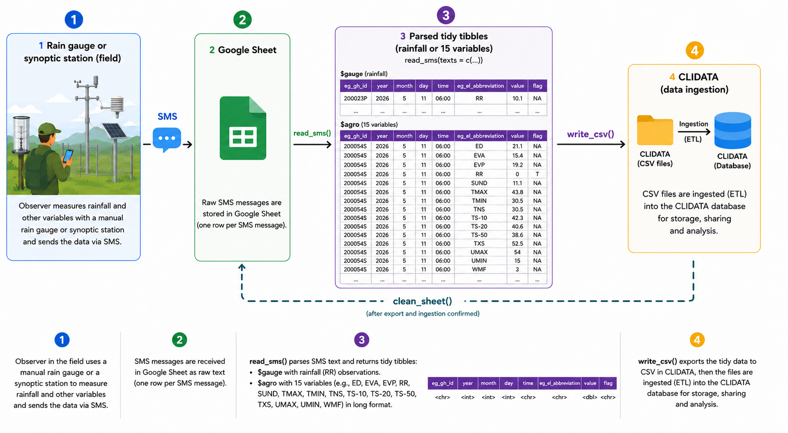

smscollectr is an R package designed for the collection, parsing, and export of meteorological observations transmitted via SMS. It is built for operational use within ANAM-BF (Agence Nationale de la Météorologie du Burkina Faso), where field observers send daily measurements as structured text messages to a central Google Sheet.
Scope notice This package is purpose-built for a specific operational context at ANAM-BF: fixed SMS formats, a CLIDATA-compatible output schema, and a Google Sheets-based collection pipeline. It is not a general-purpose SMS parsing library. That said, the core functions are deliberately modular and can serve as a starting point for adaptation to other networks, SMS formats, or database targets with minimal effort.
How it works

Two SMS formats are supported and automatically detected:
-
Format Gauge — rain gauge observations:
200001S, 03-06-2026, 125 - Format Agro — agrometeorological station observations: multi-line message with station name, full date, and key=value pairs
parse_sms() returns a named list of two tibbles — one per format — so each can be written to its own CSV for CLIDATA import.
- Field observers send a structured SMS to a shared number that forwards messages to a Google Sheet.
-
read_sms()reads, validates, parses all messages, and returns a named list$gauge/$agro. -
write_csv()exports each tibble as a CSV formatted for direct ingestion into CLIDATA. -
clean_sheet()wipes the sheet clean after a successful export.
Installation
# install.packages("pak")
pak::pak("oousmane/smscollectr", auth_token = "ghp_xxxxxxxxxxxx")Setup (run once per machine)
Two things need to be configured once before using the package: Google Sheets authentication and the Sheet URL. Both are stored securely in the system credential store and never need to be set again.
1. Google Sheets authentication
smscollectr does not authenticate automatically on load — you must call sms_auth() explicitly at the start of each session. Two modes are supported:
OAuth (interactive — suitable for desktop use):
library(smscollectr)
# Run once interactively — opens a browser for Google login.
# The token is cached and reused silently in future sessions.
sms_auth()Service account (non-interactive — recommended for servers and automated pipelines):
library(smscollectr)
# Path to the JSON key file downloaded from Google Cloud Console.
# The Sheet must be shared with the service account email.
sms_auth(path = "/secure/path/service-account.json")A service account never expires and requires no browser interaction — it is the preferred solution for operational deployments.
2. Store the Sheet URL securely
# Run once — stores the URL in the system keyring (macOS Keychain,
# Windows Credential Manager, or Linux Secret Service).
# Never saved in plain text, .Renviron, or any script.
set_sheet_url("https://docs.google.com/spreadsheets/d/SHEET_ID/edit")After this, get_sheet_url() retrieves it anywhere in your code without exposing the URL.
Quick Start
library(smscollectr)
# Authenticate (once per session)
sms_auth() # OAuth
# sms_auth(path = "/secure/path/key.json") # Service account
# 1. Read and parse SMS entries
result <- read_sms(sheet_url = get_sheet_url())
# 2. Export for CLIDATA import — one file per format
readr::write_csv(result$gauge, "export_gauge.csv", na = "")
readr::write_csv(result$agro, "export_agro.csv", na = "")
# 3. Clear the sheet after a successful export
clean_sheet(url = get_sheet_url())SMS formats
Format Gauge — Rain gauge
| Field | Description | Example |
|---|---|---|
XXXXXXY |
6-digit station ID + type code (P, S, A, or C) |
200001S |
DD-MM-YYYY |
Observation date | 03-06-2026 |
ZZZ |
Rainfall in tenths of mm, or TR for trace |
125 → 12.5 mm |
Valid examples:
Format Agro — Agrometeorological station
STATION-NAME
DD-MM-YYYY
Tn= 305
Tx= 438
TnSol= 305
TxSol= 525
T-10= 423
T-20= 406
T-50= 386
Un= 15
Ux= 54
Vent= 03
Inso= 111
e= 211
BAC= 154
PICHE= 192
RA= NT| Field | Description |
|---|---|
| Line 1 | Station name (plain text, matched against internal lookup) |
| Line 2 | Observation date DD-MM-YYYY
|
| Lines 3–17 | 15 key=value pairs — one per observed variable |
Special values (case-insensitive): TR/tr → trace (value = 0, flag = "T"); NT/nt → not measured (value = 0); xx/xxx → missing (value = -9999, flag = "M").
Invalid messages are silently dropped and never appear in the output.
Output format
read_sms() returns a named list with two tibbles:
$gauge — Rain gauge observations
| Column | Type | Description |
|---|---|---|
eg_gh_id |
character | Station identifier |
year |
integer | Observation year |
month |
integer | Observation month |
day |
integer | Observation day |
time |
character | Observation time (always "06:00") |
eg_el_abbreviation |
character | Element code (always "RR") |
value |
numeric | Rainfall in mm (0 for trace) |
flag |
character |
"T" for trace, NA otherwise |
$agro — Agrometeorological observations (15 rows per message)
| Column | Type | Description |
|---|---|---|
eg_gh_id |
character | Station identifier |
year |
integer | Observation year |
month |
integer | Observation month |
day |
integer | Observation day |
time |
character | Observation time (always "06:00") |
eg_el_abbreviation |
character | CLIDATA element code (e.g. "TMIN", "RR", "TS-10") |
value |
numeric | Observed value in physical units |
flag |
character |
"T" trace, "M" missing, NA otherwise |
Example output:
parse_sms(c(
"200023P, 11-05-2026, 101",
"DEDOUGOU\n11-05-2026\nTn= 305\nTx= 438\n..."
))
#> $gauge
#> # A tibble: 1 × 8
#> eg_gh_id year month day time eg_el_abbreviation value flag
#> 200023P 2026 5 11 06:00 RR 10.1 NA
#>
#> $agro
#> # A tibble: 15 × 8
#> eg_gh_id year month day time eg_el_abbreviation value flag
#> 200054S 2026 5 11 06:00 TMIN 30.5 NA
#> 200054S 2026 5 11 06:00 TMAX 43.8 NA
#> ...Security
All sensitive credentials are stored in the system credential store via the keyring package — never in plain text, .Renviron, or committed scripts.
| Secret | Function | When |
|---|---|---|
| Google Sheet URL |
set_sheet_url() / get_sheet_url()
|
Once per machine |
| OAuth token | Managed by gargle via sms_auth()
|
Once per machine |
| Service account key | JSON file at a secure path | Provided by admin |
Functions
| Function | Description |
|---|---|
sms_auth() |
Authenticate with Google Sheets (OAuth or service account) |
set_sheet_url() |
Store the Sheet URL securely in the system keyring (once) |
get_sheet_url() |
Retrieve the stored Sheet URL |
is_gauge_sms() |
Check whether a string matches the gauge SMS format |
is_agro_sms() |
Check whether a string matches the agrometeorological SMS format |
parse_sms() |
Parse a vector of SMS messages — returns list(gauge, agro)
|
read_sms() |
Read, parse, and format SMS entries from a Google Sheet |
clean_sheet() |
Delete all data rows from a Google Sheet (preserves header) |
to_station_id() |
Map a station name to its CLIDATA station code |
to_element_id() |
Map a variable name to its CLIDATA element abbreviation |